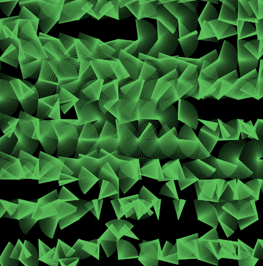
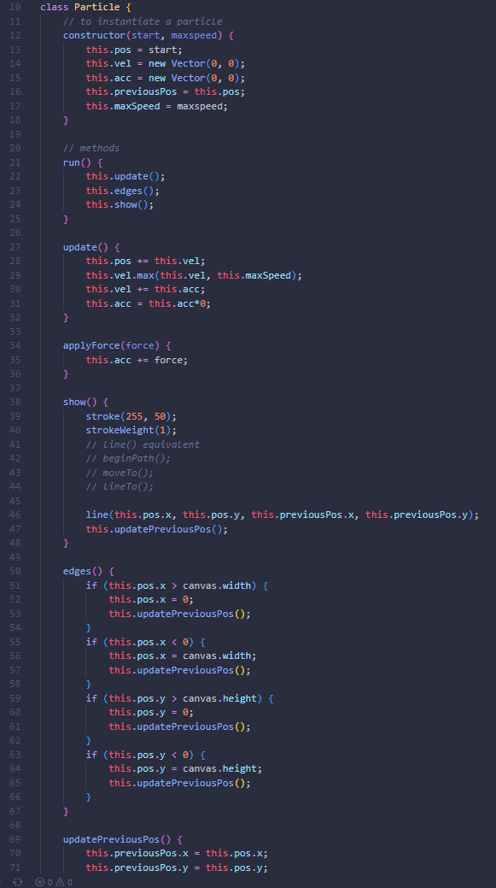
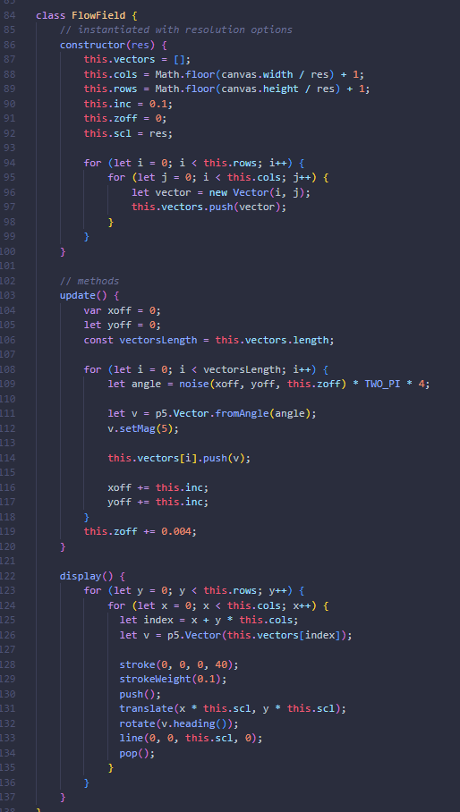

The basis of this code came from a video by Daniel Shiffman creating a Perlin noise flowfield. Perlin noise is a noise function created by Ken Perlin. He developed it for the original Tron movie and won an Academy Award for it. Unlike pure randomness, Perlin noise gives a sequence of numbers that are more related, so the differences between each iteration are a lot smaller. This helps produce more organic outputs like terrains and clouds. This is why I thought it would be useful for creating the vector field that I had tried to create previously with pixel processing.
As you can see above there is a flowfield successfully rendering but I couldn't figure out how to drop pixels onto the canvas. I still think the field looks interesting, like blades of grass blowing in the breeze. I could maybe use the Flowfield class in another way. Nevertheless, this led me to further research where I found someone had implemented the same thing but in a much simpler way (the link at the top of the page).
This is a pretty version where I didn't refresh the background for every frame.
 why no work